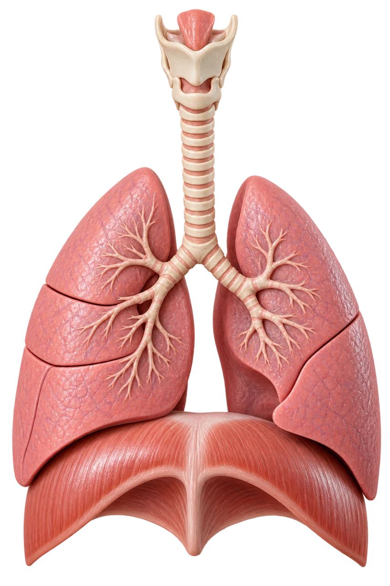

MEDLEX / TERRACOTTA
Respiratory system
 MedLexTHE LANGUAGE OF MEDICINE
MedLexTHE LANGUAGE OF MEDICINE Healthcare Crown Academy
Healthcare Crown AcademyMEDLEX / BATCH 02
Respiratory
system
Explore the vocabulary. Make the distinctions. Explain the meaning with confidence.

01 / Orient
“I can’t catch my breath.”
Hook · one sentence, several meanings
Source desk
MedlinePlus · Breathing difficulty ↗01 / Orient
Your route through the lesson
Outcomes · what you will be able to do
Locate
Trace airflow and connect six airway structures with their combining forms.
Decode
Separate common prefixes, roots, combining vowels, and suffixes.
Distinguish
Explain key differences in breathing, oxygenation, and pleural terms.
Apply
Translate a short clinical note and justify terminology choices.
02 / Anatomy
Follow the air
Click a station to reveal its role
05 Bronchi → bronchioles ↗
From air to exchange
Choose a structure on the left. Then trace the whole pathway aloud.
The larynx is a boundary landmark; upper/lower tract classification can vary by source.
Source desk
NHLBI · The respiratory system ↗02 / Anatomy
The lungs are not mirror images
Structure gives terminology a location
Right lung
Three lobes: superior, middle and inferior.
Left lung
Two lobes: superior and inferior; space accommodates the heart.
Pleura
Visceral pleura covers the lung; parietal pleura lines the chest wall.
Source desk
NHLBI · The respiratory system ↗02 / Anatomy
Movement is not gas exchange
Three processes that work together
Ventilation
Movement of air into and out of the lungs.
Diffusion
Movement of gases across the alveolar–capillary membrane.
Perfusion
Flow of blood through pulmonary capillaries.
Source desk
NHLBI · The respiratory system ↗03 / Word lab
A word is a small information system
Use meaning first, then confirm the whole term
Prefix · violet
Often modifies rate, amount or position.
Root · teal
Carries the core meaning, often a body structure.
Suffix · coral
Often identifies a condition, action or procedure.
Source desk
MedlinePlus · Word parts and meanings ↗03 / Word lab
Upper airway word bank
Flip each card · connect structure and example
03 / Word lab
Lower airway word bank
Say the structure before defining the example
03 / Word lab
One structure, more than one root
Context prevents literal translation errors
| Combining form | Meaning here | Example |
|---|---|---|
| pulmon/o | Lung | pulmonary → pertaining to the lung |
| pneum/o, pneumon/o | Air or lung, depending on term | pneumothorax → air in the pleural space |
| pleur/o | Pleura | pleuritis → inflammation of the pleura |
| thorac/o | Chest | thoracic → pertaining to the chest |
| spir/o | Breathing | spirometry → measurement of breathing |
Source desk
MedlinePlus · Word parts and meanings ↗03 / Word lab
The suffix often tells the task
Compare condition, examination and intervention
| Ending | Meaning | Respiratory example |
|---|---|---|
| -itis | Inflammation | bronchitis |
| -ectasis | Dilation / expansion | bronchiectasis |
| -scopy | Visual examination | bronchoscopy |
| -metry | Measurement | spirometry |
| -centesis | Surgical puncture, often to remove fluid | thoracentesis |
| -ectomy | Surgical removal | lobectomy |
Source desk
MedlinePlus · Word parts and meanings ↗03 / Word lab
Keep the vowel—or drop it?
Patterns help; established spelling decides
bronch/o + -scopy
Keep the combining “o”.
bronch/o + -itis
Usually drop the combining “o”.
Source desk
MedlinePlus · Understanding medical words ↗03 / Word lab
Build a term, then explain it
Interactive word builder
Source desk
MedlinePlus · Word parts and meanings ↗04 / Clinical language
The “-pnea” family
A modifier changes the breathing description
Source desk
MedlinePlus · Breathing difficulty ↗04 / Clinical language
Rate and ventilation are different
Fast breathing alone does not define hyperventilation
Tachypnea
Describes increased breathing rate.
Hyperventilation
Alveolar ventilation exceeds the body’s CO₂ production, tending to lower arterial CO₂.
Hypoventilation
Insufficient alveolar ventilation relative to CO₂ production, tending to raise arterial CO₂.
Source desk
MedlinePlus · Hyperventilation ↗04 / Clinical language
Oxygen and carbon dioxide vocabulary
Name the substance and the compartment
Hypoxemia
Low oxygen in blood.
Hypoxia
Inadequate oxygen supply at the tissue level.
Hypercapnia
Elevated CO₂ in blood.
Hypocapnia
Reduced CO₂ in blood.
Source desk
NCI · Hypoxemia ↗04 / Clinical language
Describe what the patient reports
Symptoms are clues, not diagnoses
Hemoptysis
Blood coughed up from the respiratory tract; distinguish from hematemesis, vomiting blood.
Sputum
Material brought up from the lower respiratory tract by coughing.
Pleuritic pain
Sharp pain associated with breathing or coughing; a description, not proof of pleuritis.
Cyanosis
Bluish discoloration of skin or mucosa; appearance alone does not reliably quantify oxygenation.
Source desk
MedlinePlus · Breathing difficulty ↗04 / Clinical language
Read an inflammatory term carefully
“-itis” names inflammation; it does not name the cause
Rhinitis
Nasal inflammation.
Pharyngitis
Pharyngeal inflammation.
Laryngitis
Laryngeal inflammation.
Pleuritis / pleurisy
Inflammation of the pleura.
Source desk
MedlinePlus · Word parts and meanings ↗04 / Clinical language
Four disease names you will meet often
Learn the whole term alongside the word parts
Asthma
Chronic airway disease with inflammation and variable airflow narrowing.
COPD
Chronic obstructive pulmonary disease: persistent airflow limitation; includes emphysema and chronic bronchitis patterns.
Pneumonia
Infection involving lung tissue, often the air sacs.
Pulmonary fibrosis
Scarring of lung tissue that can make the lungs stiff.
Source desk
NHLBI · Asthma ↗04 / Clinical language
One “collapsed lung,” two different terms
Locate the abnormality before choosing the word
Pneumothorax
Air collects in the pleural space; the lung can partially or completely collapse.
Atelectasis
Incomplete expansion or collapse of lung tissue, with loss of aeration.
Source desk
NCI · Pneumothorax ↗04 / Clinical language
What occupies the pleural space?
Use the contents to decode the term
Source desk
NCI · Pneumothorax ↗04 / Clinical language
Choose the test vocabulary
What does each investigation tell you?
| Term | What it assesses | Key limit |
|---|---|---|
| Pulse oximetry / SpO₂ | Estimates peripheral oxygen saturation | Does not measure CO₂; accuracy has limitations |
| Arterial blood gas / ABG | Arterial O₂, CO₂ and acid–base status | Invasive sampling; interpret in clinical context |
| Spirometry | Expired air volumes and airflow | Does not directly measure all lung volumes |
| Bronchoscopy | Visual examination of airways; may obtain samples | Not the same as a lung function test |
Source desk
NCI · Bronchoscopy ↗04 / Clinical language
Translate the spirometry report
Three abbreviations; three different quantities
FEV₁
Forced expiratory volume in one second: volume expelled in the first second of a forced expiration.
FVC
Forced vital capacity: total volume forcibly exhaled after a full inspiration.
FEV₁/FVC
A ratio used to assess airflow obstruction; interpretation needs appropriate reference limits.
04 / Clinical language
A suffix changes the procedure
Watch the difference between opening and incision
| Procedure | Decode | Meaning |
|---|---|---|
| Tracheotomy | trache/o + -tomy | Incision into the trachea |
| Tracheostomy | trache/o + -stomy | Creation of an opening into the trachea; also used for the resulting stoma |
| Thoracentesis | thorac- + -centesis | Needle puncture of the pleural cavity, typically to remove fluid |
| Lobectomy | lob- + -ectomy | Surgical removal of a lobe |
Source desk
MedlinePlus · Word parts and meanings ↗05 / Apply
Decode a short clinical note
Read once for meaning, then translate each highlighted term
and productive cough. Examination identifies
Reveal a plain-language translation
The patient feels short of breath and coughs up sputum. Breathing is abnormally rapid. A peripheral oxygen saturation estimate is recorded. Imaging shows excess fluid around a lung, and a needle procedure to remove pleural fluid is planned.
Source desk
MedlinePlus · Breathing difficulty ↗05 / Apply
Check your clinical precision
Retrieval practice · explain your choice
05 / Apply
From word parts to decisions
Retrieval practice · apply the suffix
05 / Apply
Translate, don’t just memorise
Retrieval practice · symptoms and signs
06 / Consolidate
Keep five distinctions clear
Your retrieval map
Symptom ≠ sign
Dyspnea is felt; tachypnea is observed.
Blood ≠ tissue
Hypoxemia names blood; hypoxia names tissue oxygen supply.
Rate ≠ ventilation
Tachypnea alone does not establish hyperventilation.
Pleural space ≠ lung tissue
Pneumothorax and atelectasis describe different abnormalities.
Incision ≠ opening
-tomy and -stomy encode different concepts.
06 / Consolidate
Your searchable terminology shelf
Filter by term, word part or meaning
07 / Sources
References & further reading
Live source links · reviewed 19 October 2026
NHLBI · What breathing does for the body
MedlinePlus · Word parts and meanings
MedlinePlus · Understanding medical words
Open RN · Respiratory terminology (NCBI Bookshelf)
Source desk
R1 NHLBI · The respiratory system ↗ ↗R2 NHLBI · What breathing does for the body ↗ ↗R3 MedlinePlus · Breathing difficulty ↗ ↗R4 NCI · Hypoxemia ↗ ↗R5 NCI · Hypoxia ↗ ↗R6 MedlinePlus · Word parts and meanings ↗ ↗R7 MedlinePlus · Understanding medical words ↗ ↗R8 Open RN · Respiratory terminology (NCBI Bookshelf) ↗ ↗R9 NCI · Bronchoscopy ↗ ↗R10 NCI · Pneumothorax ↗ ↗R11 NCI · Thoracentesis ↗ ↗R12 MedlinePlus · Hyperventilation ↗ ↗R13 MedlinePlus · Respiratory acidosis ↗ ↗R14 MedlinePlus · Respiratory alkalosis ↗ ↗NHLBI · The respiratory system ↗NHLBI · What breathing does for the body ↗MedlinePlus · Breathing difficulty ↗NCI · Hypoxemia ↗NCI · Hypoxia ↗MedlinePlus · Word parts and meanings ↗MedlinePlus · Understanding medical words ↗Open RN · Respiratory terminology (NCBI Bookshelf) ↗NCI · Bronchoscopy ↗NCI · Pneumothorax ↗NCI · Thoracentesis ↗MedlinePlus · Hyperventilation ↗MedlinePlus · Respiratory acidosis ↗MedlinePlus · Respiratory alkalosis ↗NCI · Hemoptysis ↗MedlinePlus · Pulmonary edema ↗NHLBI · Asthma ↗NHLBI · COPD ↗NHLBI · Pneumonia ↗NHLBI · Idiopathic pulmonary fibrosis ↗NCI · Atelectasis ↗NHLBI · Pleural disorders ↗ATS · Pulmonary function tests · updated March 2024 ↗MedlinePlus · Pulse oximetry ↗MedlinePlus · Blood gases ↗NHLBI · Tests for lung disease ↗NCI · Tracheostomy ↗07 / Sources
Clinical references & credits
Live source links · reviewed 19 October 2026
NHLBI · Idiopathic pulmonary fibrosis
ATS · Pulmonary function tests · updated March 2024
Original text synthesis and vector teaching diagrams. Diagrams are simplified, not diagnostic images. No third-party medical illustrations reproduced. Review date describes this deck’s source check, not a new publication date for every source.
Source desk
R15 NCI · Hemoptysis ↗ ↗R16 MedlinePlus · Pulmonary edema ↗ ↗R17 NHLBI · Asthma ↗ ↗R18 NHLBI · COPD ↗ ↗R19 NHLBI · Pneumonia ↗ ↗R20 NHLBI · Idiopathic pulmonary fibrosis ↗ ↗R21 NCI · Atelectasis ↗ ↗R22 NHLBI · Pleural disorders ↗ ↗R23 ATS · Pulmonary function tests · updated March 2024 ↗ ↗R24 MedlinePlus · Pulse oximetry ↗ ↗R25 MedlinePlus · Blood gases ↗ ↗R26 NHLBI · Tests for lung disease ↗ ↗R27 NCI · Tracheostomy ↗ ↗NHLBI · The respiratory system ↗NHLBI · What breathing does for the body ↗MedlinePlus · Breathing difficulty ↗NCI · Hypoxemia ↗NCI · Hypoxia ↗MedlinePlus · Word parts and meanings ↗MedlinePlus · Understanding medical words ↗Open RN · Respiratory terminology (NCBI Bookshelf) ↗NCI · Bronchoscopy ↗NCI · Pneumothorax ↗NCI · Thoracentesis ↗MedlinePlus · Hyperventilation ↗MedlinePlus · Respiratory acidosis ↗MedlinePlus · Respiratory alkalosis ↗NCI · Hemoptysis ↗MedlinePlus · Pulmonary edema ↗NHLBI · Asthma ↗NHLBI · COPD ↗NHLBI · Pneumonia ↗NHLBI · Idiopathic pulmonary fibrosis ↗NCI · Atelectasis ↗NHLBI · Pleural disorders ↗ATS · Pulmonary function tests · updated March 2024 ↗MedlinePlus · Pulse oximetry ↗MedlinePlus · Blood gases ↗NHLBI · Tests for lung disease ↗NCI · Tracheostomy ↗Course images are newly generated raster teaching artwork. Conceptual models are not patient images or diagnostic illustrations. Adapted OpenStax content is attributed under CC BY 4.0. Original source links are retained in the source desk.